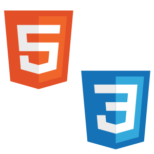
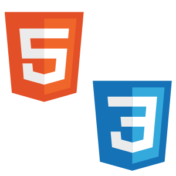

Jeżeli chcesz się ze mną stkontaktować wypełnij
O mnie
Od najmłodszych lat interesowałem się elektroniką oraz naukami ścisłymi wieku 6 lat rozkręcałem domowe komputery, oraz grzebałem w układach scalonych, za co byłem ganiany.
Pojawiła się wtedy pasja do gier komputerowych oraz software-u jednak później większość czasu w moim życiu zajął sport, oraz nauka w szkole jednak w ostatnich klasach szkoły podstawowej mimo kierunku obranego na inne przedmioty wróciłem do korzeni.
Co prawda mam mały bagaż doświadczeń jednak jak na rok nauki programowania mogę zaskoczyć.
Moje umiejentnosci
Języki Programowania

Python, czyli wysoko poziomowy interpretowany język programowanie jest moją najmocniejszą stroną. Znam język od strony proceduralnej/funkcyjnej, jaki i obiektowej. Tworzę w nim programy matematyczne, Gry oraz sztuczną inteligencję.Znam takie podstawowe biblioteki jak: math, time, os, random oraz Umiem wykorzystywać biblioteki: tkinter, Matplotlib, NumPy, turtle, pygame czy pandas. Gdzieniegdzie zahaczyłem o takie biblioteki jak NEAT czy PyTorch.

C i C++ czyli kompilowane nisko poziomowe języki programowania. Znam obydwa języki od strony funkcyjnej zaś c++ także od strony obiektowej. Wykorzystywałem je do tworzenia głównie programów matematycznych. znam także zakres podstawowych bibliotek takich jak: cstdlib, time, cstudio, math czy float.
Inne specjalizacje

HTML, czyli język znacznikowy oraz CSS, czyli kaskadowe arkusze stylów ich znajomość staram przedstawić na mojej stronie jednak są także żeczy, których nie wszystko da się wyeksponować. Oprócz flexboxa potrafię wykorzystywać grida oraz floaty. Gdzieniegdzie zdobyłem też trochę wiedzy o scss-ie oraz bootstrapie.

Gimp, czyli program do edycji grafiki rastrowej, potrafię obsługiwać program oraz edytować, jak i tworzyć grafiki.

Github, czyli portal do tworzenia resporzytoriów. Na nim w resporzytoriach prezentuje przykładowe programy napisane przeze mnie.
Python, czyli wysoko poziomowy interpretowany język programowanie jest moją najmocniejszą stroną. Znam język od strony proceduralnej/funkcyjnej, jaki i obiektowej. Tworzę w nim programy matematyczne, Gry oraz sztuczną inteligencję.Znam takie podstawowe biblioteki jak: math, time, os, random oraz Umiem wykorzystywać biblioteki: tkinter, Matplotlib, NumPy, turtle, pygame czy pandas. Gdzieniegdzie zahaczyłem o takie biblioteki jak NEAT czy PyTorch.
C i C++ czyli kompilowane nisko poziomowe języki programowania. Znam obydwa języki od strony funkcyjnej zaś c++ także od strony obiektowej. Wykorzystywałem je do tworzenia głównie programów matematycznych. znam także zakres podstawowych bibliotek takich jak: cstdlib, time, cstudio, math czy float.

HTML, czyli język znacznikowy oraz CSS, czyli kaskadowe arkusze stylów ich znajomość staram przedstawić na mojej stronie jednak są także żeczy, których nie wszystko da się wyeksponować. Oprócz flexboxa potrafię wykorzystywać grida oraz floaty. Gdzieniegdzie zdobyłem też trochę wiedzy o scss-ie oraz bootstrapie.
Gimp, czyli program do edycji grafiki rastrowej, potrafię obsługiwać program oraz edytować, jak i tworzyć grafiki.
Github, czyli portal do tworzenia resporzytoriów. Na nim w resporzytoriach prezentuje przykładowe programy napisane przeze mnie.
Kontakt
-
E-mail:
Filip.Buszewicz01@gmail.com -
Github:
spokoziomek123
-
Twitter:
@Busza_code -
Discord:
Busza#5211